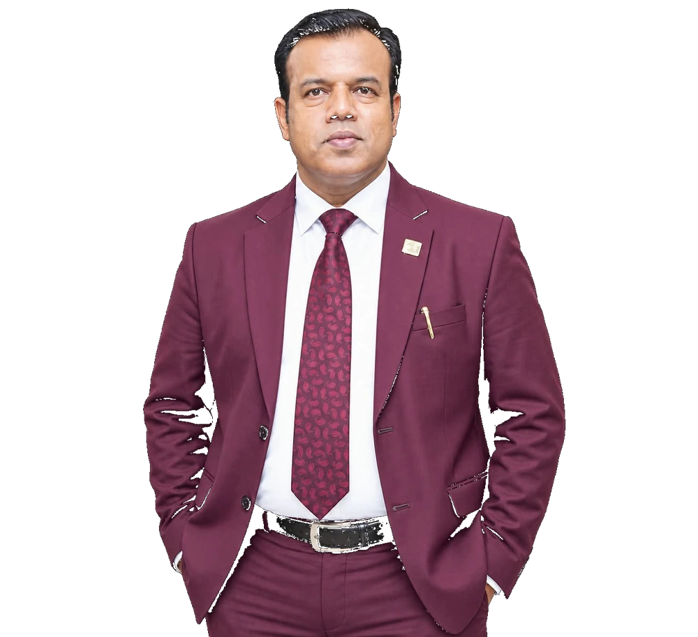
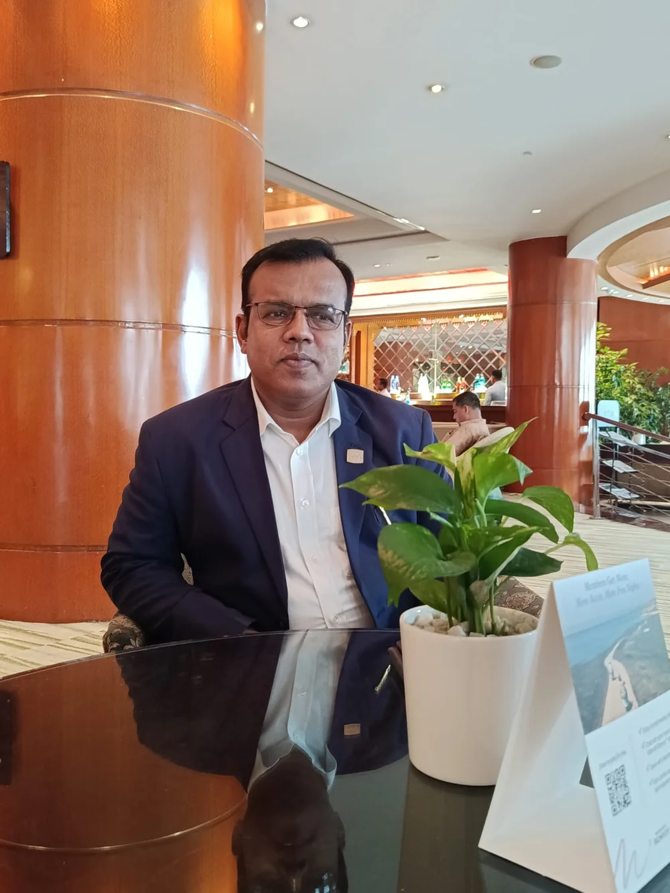

Foreign Exchange & Trade Finance
Export operations, LC and export documentation, SWIFT processes and international trade execution.
A senior banking professional with 21+ years of progressive experience spanning foreign exchange, trade finance, corporate credit, banking operations, internal audit, transaction monitoring, portfolio management and AML/CFT.


His career spans customer relationship management, foreign exchange, investment and general banking, team leadership and FAVP responsibilities. He currently serves as FAVP (Export In-charge), with responsibilities across export operations, LC documentation, SWIFT, TBML risk assessment, corporate financing, portfolio quality and regulatory compliance.
Core areas of banking expertise developed through progressive operational and leadership responsibilities.
Export operations, LC and export documentation, SWIFT processes and international trade execution.
Corporate financing evaluation, investment proposals, client onboarding and portfolio oversight.
Risk assessment, transaction monitoring and disciplined regulatory controls.
Audit, investigations, compliance reviews and control-gap identification.
Portfolio quality, overdue exposure, PAR monitoring and NPL-risk reduction.
Corporate relationships, due diligence, business development and RM guidance.
Selected career outcomes across investment, foreign exchange and NPL reduction.
Corporate investment portfolio successfully managed.
Foreign exchange portfolio successfully managed.
Investment portfolio successfully managed.
Certificate of Appreciation for NPL reduction.
A career path spanning customer relationships, foreign exchange, investment, team leadership and export operations.
Professional AML credential.
Professional banking qualification.
Leadership and managerial communication development.
For professional conversations related to banking, foreign exchange, trade finance, corporate credit, compliance and portfolio management.